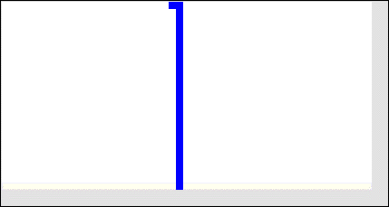

| 14. (a) Only the live-live-dead nbhd config applies to this initial
configuration. The second generation then consists of a single live cell.
From then onward, the dead-live-dead nbhd config guarantees a single live
cell persists. |
|  |
| (b) Adding the dead-live-live nbhd config guarantees two adjacent live cells
persist: dead-live-live generates the left live cell in the next
generation, live-live-dead generates the right live cell in the
next generation. There are no isolated live cells, so dead-live-dead
contributes no live cells. |
|
| (c) Remove the dead-live-dead nbhd config. |